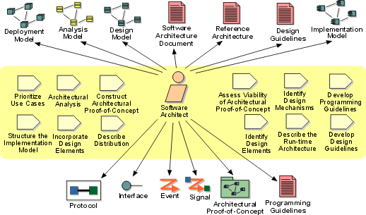

Role:
Software Architect
The software architect role leads and coordinates technical activities and
artifacts throughout the project. The software architect establishes the overall
structure for each architectural view: the decomposition of the view, the
grouping of elements, and the interfaces between these major groupings.
Therefore, in contrast to the other roles, the software architect's view is one
of breadth as opposed to one of depth.

Staffing 
"The ideal architect should be a person of letters, a mathematician,
familiar with historical studies, a diligent student of philosophy, acquainted
with music, not ignorant of medicine, learned in the responses of
jurisconsults, familiar with astronomy and astronomical calculations."
— Vitruvius, circa 25 BC
In summary, the software architect must be
well-rounded, posses maturity, vision, and a depth of experience that allows for
grasping issues quickly and making educated, critical judgment in the absence of
complete information. More specifically, the software architect, or members of
the architecture team, must combine these skills:
- Experience in both the problem domain, through a thorough
understanding of the requirements, and the software engineering domain. If
there is a team, these qualities can be spread across the team members, but
at least one software architect must provide the global vision for the
project.
- Leadership in order to drive the technical effort across
the various teams, and to make critical decisions under pressure and make
those decisions stick. To be effective, the software architect and the
project manager must work closely together, with the software architect
leading the technical issues and the project manager leading the
administrative issues. The software architect must have the authority to
make technical decisions.
- Communication to earn trust, to persuade, to motivate,
and to mentor. The software architect cannot lead by decree, only by the
consent of the rest of the project. In order to be effective, the software
architect must earn the respect of the project team, the project manager,
the customer, and the user community, as well as the management team.
- Goal-orientation and Pro-activity with a relentless focus
on results. The software architect is the technical driving force behind the
project, not a visionary or dreamer. The career of a successful software
architect is a long series of sub-optimal decisions made in uncertainty and
under pressure. Only those who can focus on doing what needs to be done will
be successful in this environment of the project.
From an expertise standpoint, the software architect needs to encompass all Role:
Designer capabilities.
Teams
If the project is large enough to warrant an architecture team, the goal is
to have a good mix of talents, covering a wide spectrum of experience and
sharing a common understanding of software engineering process. The architecture
team need not be a committee of representatives from various teams, domains or
contractors. Software architecture is a full-time function, with staff
permanently dedicated to it.
Copyright
© 1987 - 2001 Rational Software Corporation
| |

|
 Roles and Activities >
Roles and Activities >
 Software Architect
Software Architect